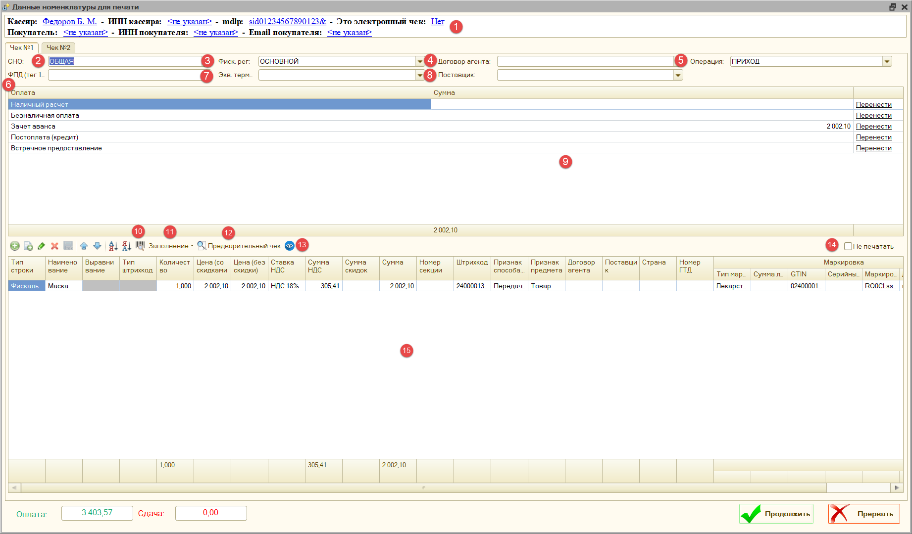
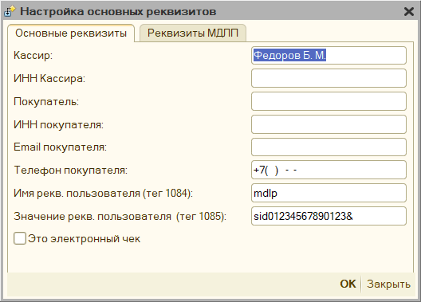
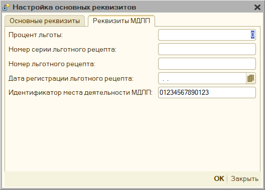
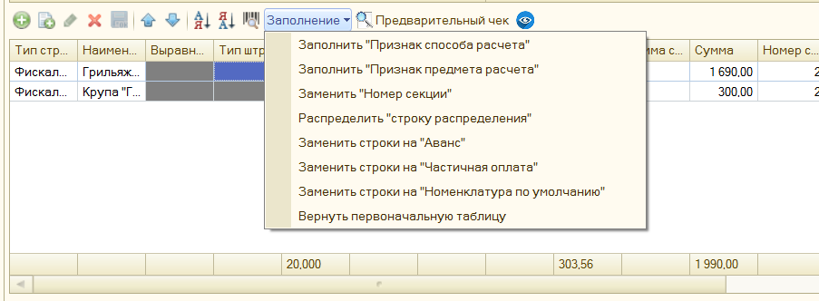
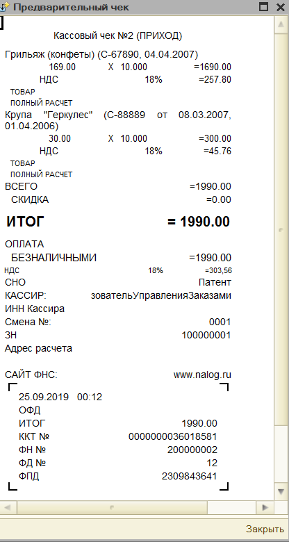
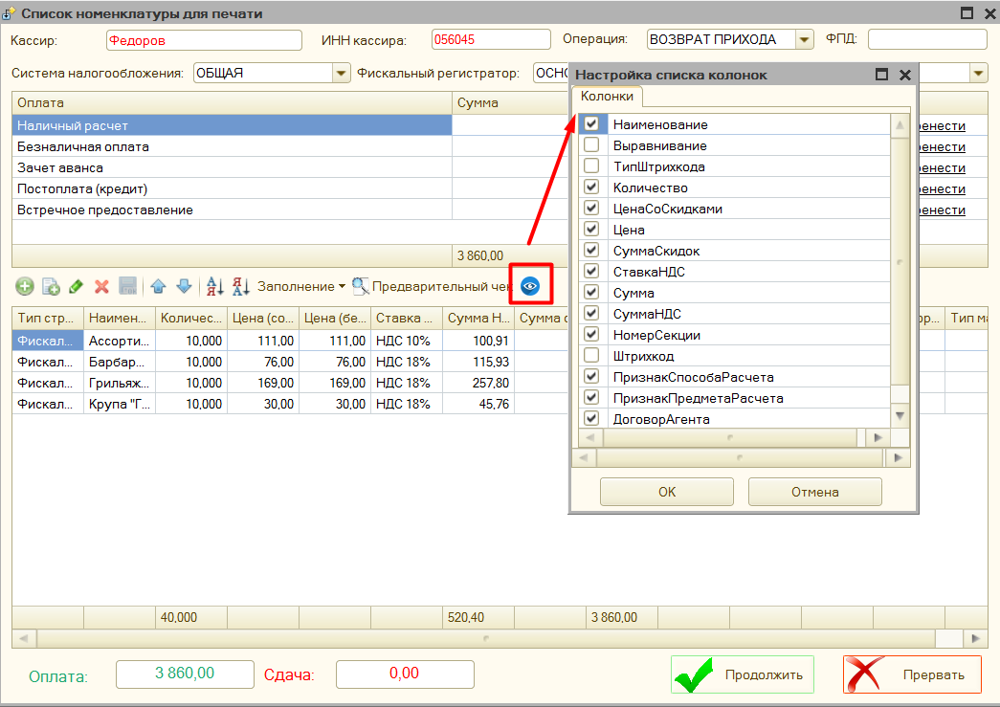
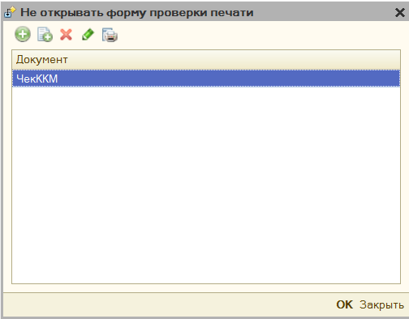
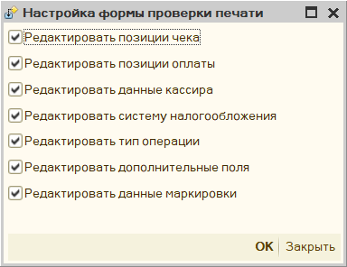
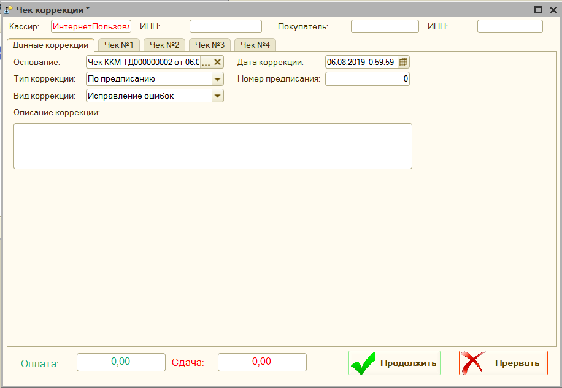
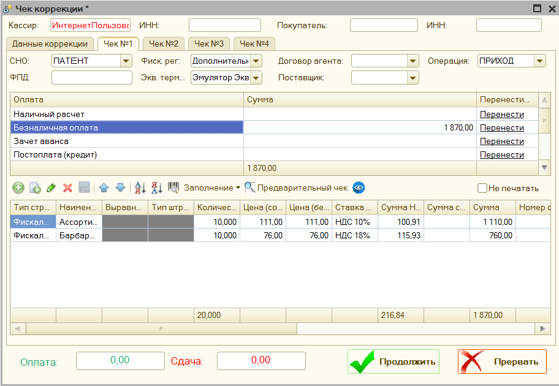

Форма проверки печати (Рабочее место кассира)¶
Форма проверки печати открывается автоматически, при печати любого документа. Она используется для проверки содержимого фискального чека, а также при необходимости его редактирования. Открытие данной формы можно отключить, для этого в параметрах обработки есть соответствующий параметр. См. «Настройка открытия формы»

- Основные реквизиты чека – позволяет настроить основные реквизиты чека: 
К основным реквизитам чека относятся: Кассир, Инн кассира, Покупатель, ИНН Покупателя, Email покупателя, телефон покупателя, Имя реквизита пользователя (тег 1084), Значение реквизита пользователя (тег 1085), электронный чек.

«Реквизиты МДЛП» - заполнить эти реквизиты можно при включении параметра «Использовать маркировку лекарств», в этом окне можно указать Процент льготы, Номер серии льготного рецепта, Номер льготного рецепта, Дата регистрации льготного рецепта, Идентификатор места деятельности МДЛП.
- СНО – система налогообложения, под которой будет пробит чек.
- Фиск. рег. – фискальный регистратор, на котором будет пробит чек.
- Договор агента – имя заранее добавленного в параметры обработки договора агента.
- Операция – операция фискального чека: приход, возврат прихода, расход или возврат расхода.
- ФПД (тег 1192) – фискальный признак документа, используется для возвратов, когда нужно указать фискальный признак предыдущего документа, это тег 1192
- Экв. терминал – эквайринговый терминал, на котором будет пробита безналичная информация.
- Поставщик – имя заранее добавленного в параметры обработки поставщика, работает в паре с договором агента.
- Оплаты – раздел оплаты, где можно вручную скорректировать суммы оплаты. Кнопка «Перенести» может переносить оплаты между фактическими суммами («наличные» и «безналичная оплата») и виртуальными («постоплата (кредит)», «зачет аванса», «встречное предоставление»)
- «Ввести код маркировки вручную» - открывает форму, где можно указать штрихкод для маркировочного товара. Доступен вызов по кнопке F7
-
Заполнение – меню, где можно запустить команды для редактирования позиций чека: 
-
Заполнить «Признак способа расчета» - позволяет указать для всех позиций чека «Признак способа расчета»
- Заполнить «Признак предмета расчета» - позволяет указать для всех позиций чека «Признак предмета расчета»
- Заполнить «Номер секции» - позволяет указать для всех позиций чека Номер секции
- Распределить «строку распределения» - если в чеке присутствует строка с отрицательной суммой с наименованием «Строка распределения», то будет автоматически разнесена на остальные строки, путем уменьшения количества и суммы по остальным позициям чека.
- Заменить строки на «Аванс» - заменяет все строки чека на одну строку полученную из шаблона строки основания, либо если он не указан, то «Оплата по Покупатель основание такое-то». Устанавливает признак способа расчета «Аванс», признак предмета расчета «Платеж», цена в строке становится равной сумме оплаты, а количество = 1, также удаляются виртуальные оплаты: «Зачет аванса» и «Постоплата»
- Заменить строки на «Частичная оплата» - оставляет строки чека на месте, однако во всех заменяет признак способа расчета на "Предоплата частичная", признак способа расчета "Платеж", количество = 1, цена становится равной сумме, также удаляются виртуальные оплаты: «Зачет аванса» и «Постоплата»
- Заменить строки на «Номенклатура по умолчанию» - заменяет все строки чека на одну строку с наименование указанным в параметре обработки «Номенклатура по умолчанию», признаком способа расчета «Передача с полной оплатой», признаком предмета расчета «Товар», и удаляются виртуальные оплаты: «Зачет аванса» и «Постоплата»
-
Вернуть первоначальную таблицу – отменяет все внесенные изменения и восстанавливает таблицу с позициями чека.
-
«Предварительный чек» - формирует на основании текущих данных предварительный чек и выводит его на экран. 
-
«Настройка видимости колонок» – позволяет настроить видимость колонок, в таблице позиции чека, например, можно отключить видимость данных о договоре агента, если он не используется. 
-
«Не печатать» - позволяет отключить печать выбранного чека, данный флажок доступен, когда при печати получается 2 и более чеков.
-
«Позиции чека» - таблица, которая содержит фискальные строки чека, их можно отредактировать вручную
Настройка открытия формы проверки печати¶
Для того, чтобы для определенных документов не открывалась «форма проверки печати», необходимо это указать в параметре «Настройка открытия формы проверки печати» обработки. Сюда необходимо добавить имя документа, для которого не нужно открывать формы проверки печати.

Настройка формы проверки печати¶

Данная форма позволяет настроить доступность полей «формы проверки печати», можно открыть через параметры обработки.
-
Редактировать позиции чека – включает возможность редактировать позиции чека в форме проверки печати. По умолчанию, включено.
-
Редактировать позиции оплаты – включает возможность редактировать данные об оплате в форме проверки печати. По умолчанию, включено.
-
Редактировать данные кассира – включает возможность редактировать имя и инн кассира в форме проверки печати. По умолчанию, включено.
-
Редактировать систему налогообложения – включает возможность редактировать систему налогообложения в форме проверки печати. По умолчанию, включено.
-
Редактировать тип операции – включает возможность редактировать тип операции в форме проверки печати. По умолчанию, включено.
-
Редактировать дополнительные поля - включает возможность редактирования полей «Фиск. рег», «Экв. терминал», «ФПД», «Поставщик», «Договор агента» в форме проверки печати. По умолчанию, включено.
-
Редактировать данные маркировки - включает возможность редактирования полей «Тип маркировки», «GTIN», «Серийный номер», «Маркировка BASE64». По умолчанию, включено.
Чек коррекции¶
Не путайте чек коррекции и чек на возврат. Чек коррекции отбивается, если нужно исправить ошибку (факт неприменения ККТ), а если нужно оформить возврат товара, то нужно отбить обычный кассовый чек с указанием признака расчета «возврат прихода».
Обработка поддерживает использование чека коррекции. Если ваша конфигурация содержит в себе такой документ, то печать можно произвести из него. Если же нет, то печать данного чека можно сделать из параметров обработки – Ручное управление - Чек коррекции. См. Описание параметров - Ручное управление
Также вы можете добавить чек коррекции в ваш документ, подключив к нему внешнюю печатную форму «ВПФ_ЧекКоррекции», которая находится вместе с основной обработкой.
Обязательными для заполнения являются поля «Основание коррекции» (можно указать числовой номер документа), «номер» и «дата коррекции».
Обратите внимание: что полноценная работа с чеком коррекции доступна для более новых компонент оборудования (ревизии 3000 и выше), поэтому для старых компонент, если Тип коррекции «Неприменение ККТ», будет сформирован чек коррекции без указания номенклатуры, для типа коррекции «Исправление ошибок» - будет сформировано 2 чека: обычный чек возврата и уже корректный чек прихода.
Форма чека коррекции¶


Чек коррекции сохраняется в каталог «Куда сохранять чек»